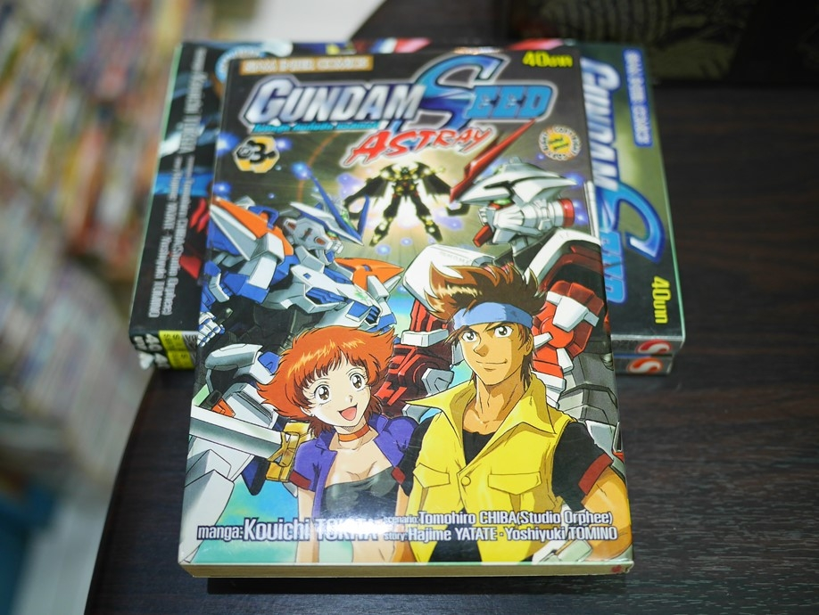

<!--
  Generated template for the DetailhistoryPage page.

  See http://ionicframework.com/docs/components/#navigation for more info on
  Ionic pages and navigation.
-->
<ion-header>

  <ion-navbar>
    <ion-title>รายละเอียดการยืม</ion-title>
  </ion-navbar>

</ion-header>


<ion-content padding>
    <ion-list>
        <ion-item>
          <div>
              <ion-thumbnail>
                
              </ion-thumbnail>
          </div>
          <br>
          <div>
            <h2 style="text-align: center">ของที่ยืม : หนังสือการ์ตูน กันดั้ม</h2><br>
            <h3>ชื่อคนยืม</h3>
            <p>น้องส้มโอคนสวย</p>
            <h3>ชื่อพยาน</h3>
            <p>เม่น</p>
            <h3>เวลายืม</h3>
            <p>28/8/2018 12:35</p>
            <h3>เวลาคืน</h3>
            <p>29/8/2018 9:35</p>
          </div>
        </ion-item>
      </ion-list>
</ion-content>
